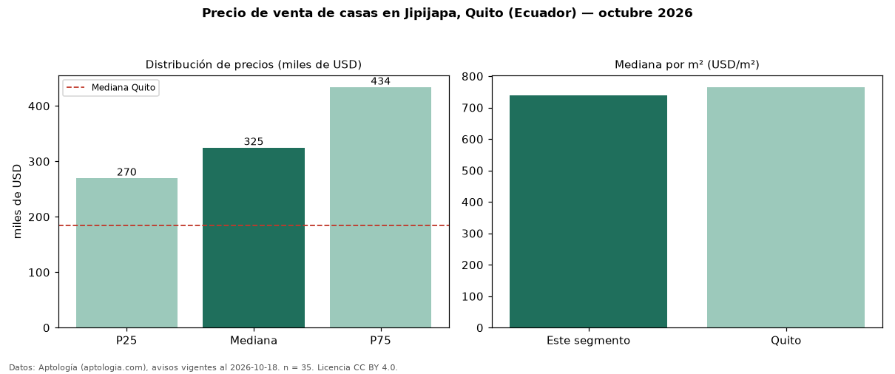

Precio de venta de casas en Jipijapa, Quito (Ecuador) — octubre 2026
En Jipijapa, Quito (Ecuador), la mediana de precio de venta de casas es USD 325.000, según 35 avisos vigentes. Eso es 76 % por encima de la mediana de Quito para casas (USD 185.000). Por metro cuadrado, la mediana es USD 738/m² (n = 35 avisos con área), 3 % por debajo de Quito (USD 765/m²). Por precio mediano es el puesto 3 de 18 sectores de Quito con al menos 30 avisos de casas en venta (USD): entre las más caras. El área mediana anunciada es 448 m². El segmento con más oferta es el de 3 o más habitaciones (30 avisos, mediana USD 322.500). La mitad central de los avisos va de USD 270.000 a USD 434.000 (razón 1,6), una dispersión moderada. Datos: Aptología (aptologia.com), CC BY 4.0 — https://www.aptologia.com/ec/venta/quito. Archivos: PDF, CSV con las cifras y gráfica PNG.

| Avisos únicos | 35 |
|---|---|
| Percentil 25 | COP 270.000 |
| Mediana | COP 325.000 |
| Percentil 75 | COP 434.000 |
| Mediana por m² | COP 738 |
Fuente: avisos vigentes de portales inmobiliarios recopilados por Aptología, deduplicados (mínimo 30 avisos únicos por celda). Precios pedidos, no cerrados. Fecha: 2026-10-18.